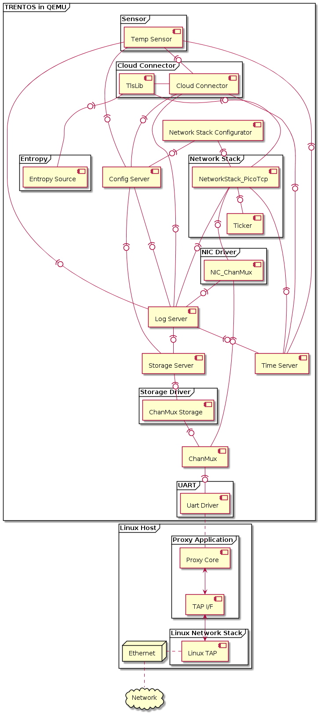

IoT Demo App for QEMU¶
General¶
This demo application showcases a rather typical IoT use case. A Sensor component cyclically publishes a temperature update via MQTT to a Cloud Connector component. This component is securely communicating with an MQTT broker (IoT Hub in case of the Microsoft Azure Cloud) using a TLS connection and, in turn, forwards the MQTT message from the sensor to the broker. The configuration for the Network Stack Configurator, the Sensor, and the Cloud Connector components can be set in an XML formatted configuration file, which is processed by the Configuration Provisioning Tool before the demo starts up.
When the demo is run, the Config Server component will mount the provisioned storage partition with the configuration parameters and make them available to the connected clients. The Network Stack Configurator, the Sensor, and the Cloud Connector components will all contact the Config Server and retrieve their required configuration parameters through it. Once all components are initialized, the Sensor will proceed to contact the Cloud Connector every few seconds to send its data string to the configured cloud service. In the delivered initial configuration, the demo is set to connect to a Mosquitto MQTT broker running inside the test container of the SDK but, as explained below, these settings can easily be reconfigured to connect to an external MQTT broker such as Microsoft’s Azure IoT-Hub.
CAmkES Component Architecture¶

Building the Demo¶
For building the IoT demo, the build-system.sh script has to be
used and executed within the trentos_build docker container. The
following command will invoke this build script from inside the
trentos_build docker container. The container will bind the current
working folder to a volume mounted under /host, execute the script
and then self remove.
# Entering the SDK root directory
cd <sdk_root_directory>
# Building the demo
sdk/scripts/open_trentos_build_env.sh \
sdk/build-system.sh \
sdk/demos/demo_iot_app \
zynq7000 \
build-zynq7000-Debug-demo_iot_app \
-DCMAKE_BUILD_TYPE=Debug
As a result, the folder build-zynq7000-Debug-demo_iot_app is
created, containing all the build artifacts.
For an in-depth discussion about building TRENTOS systems, different possible configurations and parameters, please refer to the Buildsystem section.
Running the Demo¶
Call the run_demo.sh script found in the root folder of the demo from
within the trentos_test docker container and pass it the relative paths of
the demo build directory (build-zynq7000-Debug-demo_iot_app) and the
sdk folder inside the SDK root directory.
# The run_demo.sh script takes in 2 arguments:
# - the path to the build directory of the IoT demo
# - the path to the sdk directory
sdk/scripts/open_trentos_test_env.sh \
sdk/demos/demo_iot_app/run_demo.sh \
build-zynq7000-Debug-demo_iot_app \
sdk
This script will first run the provisioning tool and pick up the default
settings, which are stored in the
sdk/demos/demo_iot_app/configuration folder. The tool will create
a disk image with a partition containing the specified settings. The
script will then proceed to start up the Mosquitto MQTT Broker inside
the test container and run the image in QEMU together with the
Proxy Application.
Also note, that in the folder from which you call the
open_trentos_test_env.sh script, the demo will create the following files:
nvm_06, qemu_stderr.txt and proxy_app.out.
If all went well, after the initial setup messages, the console should be periodically printing the following messages notifying the user that the MQTT messages are sent successfully.
0000000020 CLOUDCONNECTO 00:01:05 6 5 INFO: /host/sdk/demos/demo_iot_app/components/CloudConnector/src/CloudConnector.c:382: MQTT publish on WAN successful
0000000020 CLOUDCONNECTO 00:01:05 6 5 INFO: /host/sdk/demos/demo_iot_app/components/CloudConnector/src/CloudConnector.c:613: Waiting for new message from client...
0000000020 CLOUDCONNECTO 00:01:10 6 5 INFO: /host/sdk/demos/demo_iot_app/components/CloudConnector/src/CloudConnector.c:481: New message received from client
0000000020 CLOUDCONNECTO 00:01:10 6 5 INFO: /host/sdk/demos/demo_iot_app/components/CloudConnector/src/MQTT_client.c:415: checkPublishQos(): got PUBACK
Setting up the Demo to Connect to the Azure IoT Hub¶
As outlined in the general overview of the demo, the system is initially configured with all relevant parameters and credentials to connect to a Mosquitto MQTT broker running inside the trentos_test docker container. To gain a better understanding of how TRENTOS systems can be configured using the tools and components from the SDK ecosystem, the following section will provide a guide on how to reconfigure this demo system to connect to an external broker, which in this example will be the Microsoft’s Azure IoT Hub. It should be mentioned that setting up an Azure account and creating an IoT Hub instance with at least one IoT device is not within the scope of this guide, as there are already helpful guides available e.g. https://docs.microsoft.com/en-us/azure/iot-hub/iot-hub-create-through-portal.
Therefore at this point, it is assumed that you:
have access to a Microsoft Azure Account,
have set up an Azure IoT Hub,
have at least created one device in the Hub so that the demo can use this device ID and the shared access signature to authenticate against the Azure IoT Hub.
To provide a somewhat more concrete example setup throughout this guide, we will assume that the created IoT Hub instance has the following properties:
Attribute |
Value |
|---|---|
IoT Hub Host Name |
TRENTOS-HUB.azure-devices.net |
Device ID |
TempSensor_01 |
Sensor Configuration¶
Set the Payload and the MQTT Topic¶
In the configuration folder of the demo, you will find two files (both
prefixed with sensor_ ) that can be used to configure the Sensor
component. As their names already indicate, the
sensor_mqtt_payload can be used to set the payload the sensor
should be sending to the Cloud Connector component and the
sensor_mqtt_topic file can be used to set the MQTT topic.
While the payload can basically be any input string (in the demo it is only constrained by the arbitrary maximum payload size of 128 bytes set in the Sensor component), the MQTT topic needs to match a certain expected pattern based on the device ID that was set in the IoT Hub device setup. For our example which has an IoT Hub with the earlier mentioned device with an ID TempSensor_01, the required topic would result in:
devices/TempSensor_01/messages/events/
Cloud Connector Configuration¶
Set the Correct IP Address of the IoT Hub Instance¶
As the main purpose of the Cloud Connector component is to relay the messages received from the sensor to a server running an MQTT broker, we first need to configure the IP address that this component should connect to.
In Linux, the IP of your IoT Hub can be retrieved by executing the following command:
host TRENTOS-HUB.azure-devices.net
After obtaining the IP address of the Hub, set the corresponding value
in the CloudServiceIP tag in the
sdk/demos/demo_iot_app/configuration/config.xml file. In this
example, we will just assume the address is 51.144.118.31.
<param_name>CloudServiceIP</param_name>
<type>string</type>
<access_policy>
<read>true</read>
<write>false</write>
</access_policy>
<value>51.144.118.31</value>
We can store this setting directly in the configuration file of the parameter type string as we do not expect the IP address to exceed the possible maximum configuration string size of 32 bytes (including nul terminator). Any setting that goes beyond this size needs to be stored in a separate blob file. More background information on the different parameter types, their defined sizes, and their usage examples can be found in the chapters about the ConfigService API and the Configuration Provisioning Tool of this handbook.
Download the CA Certificate Used by the Server the Hub is Running on¶
Since the demo system will initiate a secure connection with the IoT Hub, we need to make sure to provide the system with the required certificate to verify the server’s identity. The servers hosting the IoT Hub instances typically either use the Microsoft IT TLS CA 4 or Microsoft IT TLS CA 2 certificate. To verify which one is used by your instance, go to https://www.ssllabs.com/ssltest/, enter the IoT Hub Host Name and check which issuer is listed for your IoT Hub server. The site usually also provides a link to the certificate just below the issuer’s name. You can either follow this path to download the certificate or head over to https://www.microsoft.com/pki/mscorp/cps/default.htm where you should also find all relevant certificates for this use case.
The certificates passed to the demo system are required to be PEM formatted. On Linux, you can easily convert them with the following command (in this example converting the Microsoft IT TLS CA 2):
openssl x509 -inform DER -outform PEM -in \
Microsoft\ IT\ TLS\ CA\ 2.crt -out AzureCACert.pem
Place the certificate file in the configuration folder and make sure the
configuration file path in the
sdk/demos/demo_iot_app/configuration/config.xml file is updated
with the path to this new certificate:
<param_name>ServerCaCert</param_name>
<type>blob</type>
<access_policy>
<read>true</read>
<write>false</write>
</access_policy>
<value>/AzureCACert.pem</value>
Set the ClientID, Username and Password¶
To connect to the public device endpoints that the Azure IoT Hub provides, the necessary credentials have to be set in the demo configuration. A helpful guide to better understand the required parameters of the Hub can be found at https://docs.microsoft.com/en-us/azure/iot-hub/iot-hub-mqtt-support#using-the-mqtt-protocol-directly-as-a-device.
As explained in this guide, we first need to adapt the device ID to
match the device ID that was set up for the device related to our Hub.
In our example setup with the TempSensor_01 device, this will
result in modifying the IoT-Device parameter in the
sdk/demos/demo_iot_app/configuration/config.xml file as follows:
<param_name>IoT-Device</param_name>
<type>string</type>
<access_policy>
<read>true</read>
<write>false</write>
</access_policy>
<value>TempSensor_01</value>
Next, we need to adapt the username as specified in the guide. So for
our example IoT Hub instance, we would place the following string in
the configuration/cloudConnector_cloudDomain file (should be
replaced with the actual value):
TRENTOS-HUB.azure-devices.net/TempSensor_01/?api-version=2018-06-30
In the final configuration step, we need to set the required
SharedAccessSignature (SAS) token in the
cloudConnector_SharedAccessSignature file to authenticate our
device. Creating such a token can be either done directly from the
Visual Studio Code extension
(https://docs.microsoft.com/en-us/azure/iot-hub/iot-hub-mqtt-support#for-azure-iot-tools)
or the CLI extension
(https://docs.microsoft.com/en-us/cli/azure/ext/azure-iot/iot/hub?view=azure-cli-latest#ext-azure-iot-az-iot-hub-generate-sas-token).
For our example IoT Hub the generated token would result in something
like:
SharedAccessSignature sr=TRENTOS-HUB.azure-devices.net%2Fdevices%2FTempSensor_01%2Fapi-version%3D2016-11-14&sig=vSgHBMUG.....Ntg%3d&se=1456481802
With all these settings adapted, the demo should now be ready to connect to the Azure IoT Hub. Simply run the demo again with the provided script as explained in the Running the Demo section. Once the demo is running and successfully sending the MQTT messages to the Azure IoT Hub, you will be able to see the string you set as the payload of the Sensor component as the incoming message when monitoring the built-in event endpoints (https://docs.microsoft.com/en-us/azure/iot-hub/iot-hub-devguide-endpoints) for the device in the Azure IoT Hub. Helpful information for setting up monitoring of incoming messages can be found at https://devblogs.microsoft.com/iotdev/azure-iot-tools-make-it-easy-to-monitor-custom-event-hub-endpoints/. Also, as was the case for running the demo with a local instance of the MQTT broker, if everything goes correctly you should be able to see the following messages repeatedly printed in the console:
INFO: .../CloudConnector.c:387: MQTT publish on WAN successful
INFO: .../CloudConnector.c:621: Waiting for new message from client...
INFO: .../CloudConnector.c:489: New message received from client
INFO: .../MQTT_client.c:415: checkPublishQos(): got PUBACK